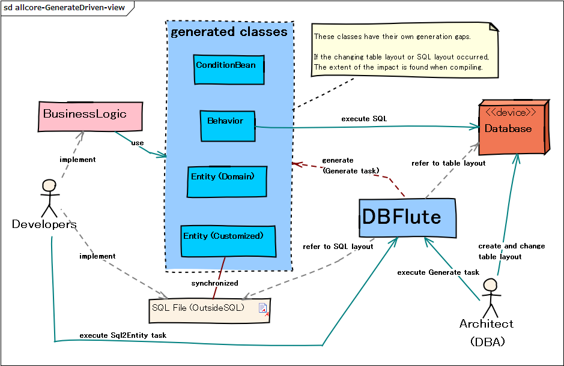

自動生成ドリブン
DBFluteの基本アーキテクチャである 自動生成ドリブン について説明します。
${indexlist}DBFluteにおける自動生成
自動生成ドリブン
DBFluteは、自動生成されたクラスがあって初めて動作するO/Rマッパです。 (自動生成なしで)ライブラリだけ準備して、とりあえず簡単なDBアクセス、ということはできません。
それは、DBFluteが (データベース)スキーマとプログラムとの同期 を重視し、開発中、もしくは、運用中(二次開発など)のDB変更に対する耐久性を提供するためです。 逆に言うと、DB変更というものが現実問題どうしても発生してしまうということ、また、DB変更が与えるプログラムへの影響(デグレの恐怖、修正のコストなど)、 これらがシステム開発の成否に影響する、とても大きな問題だという認識をDBFluteは持っています。
図 : 自動生成ドリブンの概念図 
{kind=link}
自動生成の方向
DBFluteにおける自動生成とは、(データベース)スキーマ情報を元にしたテーブルに対応するクラスの自動生成を示します。 その逆方向であるクラスからのテーブルの自動生成はサポートされていません。よって、DBFlute(のドキュメント)において、例えば、"テーブルの自動生成" と言った場合は、テーブルの create table を示すのではなく、"テーブル対応のクラスの自動生成" を示します。(その他、"プロシージャの自動生成" や "シノニムの自動生成" なども同様です)
ReplaceSchemaタスクでのテーブル作成は、明示的に記述された create table 文を実行するものであり、自動生成という言葉で表現されることはありません。
DB変更に強い
DBFluteにおける基本的なDBアクセスの例(ConditionBean)は以下のようになります。
e.g. 会員テーブルの会員名称が 'Stojkovic' であること {MEMBER, MEMBER_NAME} @Java
MemberCB cb = new MemberCB();
cb.query().setMemberName_Equal("Stojkovic");
Member member = memberBhv.selectEntity(cb);
もし、開発中にDB変更が発生して、会員テーブルの会員名称のカラム名が "MEMBER_NAME" から、"LAST_NAME" と "FIRST_NAME" に分割されるとしたらどうしましょう？真っ先にやらなければならないのは、プログラムへの影響範囲の特定です。古い "MEMBER_NAME" というカラム名に依存している箇所を見つけて、新しい名前に直す必要があります。それが一つでも抜けてしまったら、"DB変更によるデグレ" となってしまいます。この影響範囲の特定が、実はかなり骨の折れる作業であり、また、マネジメント的にも予期せぬ工数になりがちです。
DBFluteでは、その影響範囲の特定をコンパイルエラーで探す というのを基本としています。会員名称のカラム名への参照は、setMemberName_Equal() というように、メソッド名になっています。DB変更が発生したら、新しいスキーマ情報を取得してクラスを再自動生成します。 すると、この古い名前でのメソッドは削除され、新しい名前でのメソッドが新たに作成されます。 つまり、このDBアクセス部分のプログラムはコンパイルエラーとなり、テスト実行するまでもなく影響範囲が特定できます。
e.g. DB変更が発生して、再自動生成した直後 {MEMBER, MEMBER_NAME} @Java
MemberCB cb = new MemberCB();
cb.query().setMemberName_Equal("Stojkovic"); // compile error
Member member = memberBhv.selectEntity(cb);
... = member.getMemberName(); // compile error
このコンパイルエラーになった箇所を、コンパイルが通るように(新しいカラムを利用するように)直せば良いのです。
e.g. 再自動生成した後に新しいカラムを利用するように修正 {MEMBER, MEM_NAME} @Java
MemberCB cb = new MemberCB();
cb.query().setLastName_Equal("Stojkovic");
Member member = memberBhv.selectEntity(cb);
... = member.getLastName();
外だしSQLでもDB変更に強い
これは、ConditionBeanというタイプセーフなDBアクセスAPIだけでなく、SQLをベタに書く "外だしSQL" (OutsideSql)でも同様のことを言えます。
外だしSQLは、2Way-SQL で実装されるため、一括のテスト実行をすることで、カラム名などの影響範囲を簡単に特定できます。 DBFluteでは、OutsideSqlTestタスクを実行することで、全ての外だしSQLを 2Way-SQL として実行し、その結果で影響範囲を知ることができます。
e.g. 2Way-SQLなので、そのまま実行して古いカラムの特定ができる {MEMBER, MEMBER_NAME} @OutsideSql
select member.MEMBER_ID
, member.MEMBER_NAME -- execution error
from MEMBER member
where member.BIRTHDATE = /*pmb.birthdate*/'1960-04-12'
e.g. 古いカラムを直して、再実行(実行エラーなし) {MEMBER, MEM_NAME} @OutsideSql
select member.MEMBER_ID
, member.LAST_NAME -- OK
from MEMBER member
where member.BIRTHDATE = /*pmb.birthdate*/'1960-04-12'
また、プログラム上での影響範囲の特定に関しては、DBFluteでは、外だしSQL(のselect句)に対応するクラスを自動生成してプログラムで利用するため、 select句の構造が変わったら、ConditionBeanの時と同じように再自動生成(Sql2Entityタスクを実行)すれば、影響範囲をコンパイルエラーとして特定できます。
e.g. 外だしSQLの結果を利用しているプログラム(古いカラム) {MEMBER, MEMBER_NAME} @Java
List<SimpleMember> memberList = memberBhv.outsideSql().selectList(...);
for (SimpleMember member : memberList) {
... = member.getMemberName(); // compile error
}
e.g. 外だしSQLの結果を利用しているプログラム(新しいカラム) {MEMBER, MEM_NAME} @Java
List<SimpleMember> memberList = memberBhv.outsideSql().selectList(...);
for (SimpleMember member : memberList) {
... = member.getLastName();
}
DB変更は必要悪！？
多くのディベロッパーにとって "DB変更はイヤなもの" と感じることでしょう。 できる限り発生して欲しくないものでありますが、しかしながら、発生してしまう以上は、それは(その時点では)そのシステムにとって必要なことなのです。
データベースはアプリよりも何倍も長生きと言われ、アプリは無くなっても、(新しいアプリと共に)データベースはそのまま生き続けることが多々あります。 最初の設計時点でどうしても見つけられなかった(理想の)テーブル構造、これを開発中に見つけてしまった、いや、見つけることができた。 後戻りできないシステム運用開始前に見つけることができたのはとても幸運なことであります。
心配なのは、プログラムへの影響が大きいために、その "より良いものにするDB変更" が実際に反映されないという状況です。そのギャップによって運用後の二次開発で痛い思いをするかもしれません。 もしくは、何年後か後、同じデータベースを使って別のアプリを開発するところで(誰かが)痛い思いをするかもしれません。 せっかく見つけたDB変更、これが反映されないのはそのシステム全体の不利益です。
そういうことからも、DBFluteは、"ぜひとも反映させたいDB変更" を反映させやすくするツールとも言えます。間接的な DB設計者のためのツール と言えるかもしれません。 実際に、DBFluteを使っているプロジェクトでのDB設計は、そうでないプロジェクトよりも遥かにやりやすいもので(作者体験談)、 DB設計の仕事をするときは、必ずDBFluteが欲しいと思うようになっています。